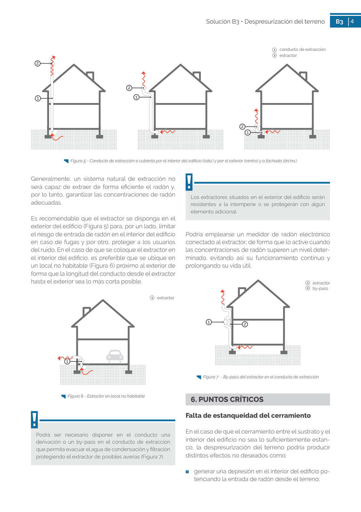
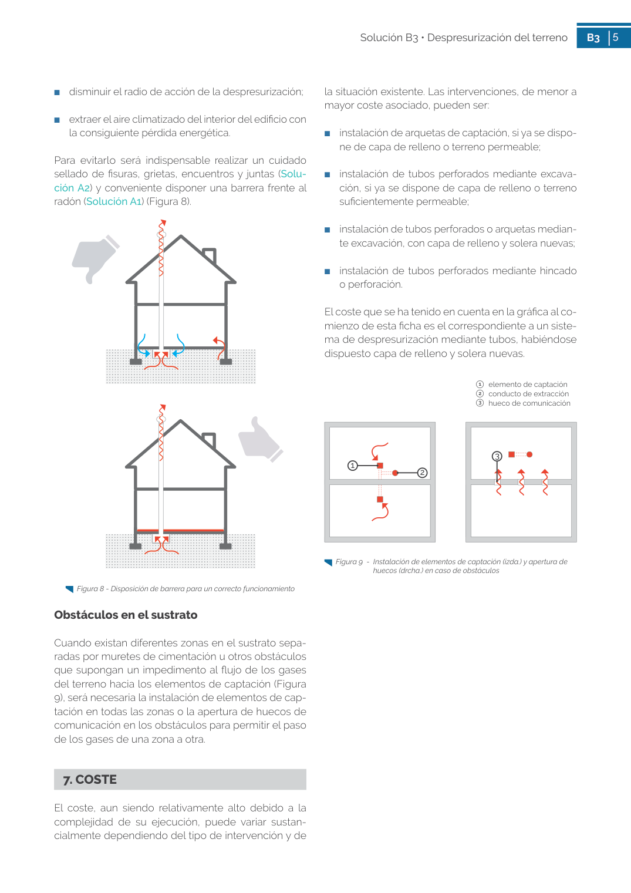

GUIA · 1 conducto de extracción 2 extractor · versión sin-fecha · capa guia
Formatos: JSON compacto · Markdown · PDF fuente
Ámbito del documento · texto del ámbito · documento y tablas
Tipo: tablas, figuras · nivel 1 · sección estimada: 1 conducto de extracción 2 extractor · padre:
1 conducto de extracción 2 extractor 2 extractor 2 1 2 1 Figura 5 - Conducto de extracción a cubierta por el interior del edificio (izda.) y por el exterior (centro) y a fachada (drcha.) 1 2 5 Solución B3 • Despresurización del terreno B3 5 ■ disminuir el radio de acción de la despresurización; ■ extraer el aire climatizado del interior del edificio con la consiguiente pérdida energética. Para evitarlo será indispensable realizar un cuidado sellado de fisuras, grietas, encuentros y juntas (Solu ción A2) y conveniente disponer una barrera frente al radón (Solución A1) (Figura 8). Figura 8 - Disposición de barrera para un correcto funcionamiento


PDF fuente redistribuible: copia fiel enlazada en esta página (SHA256 verificado).